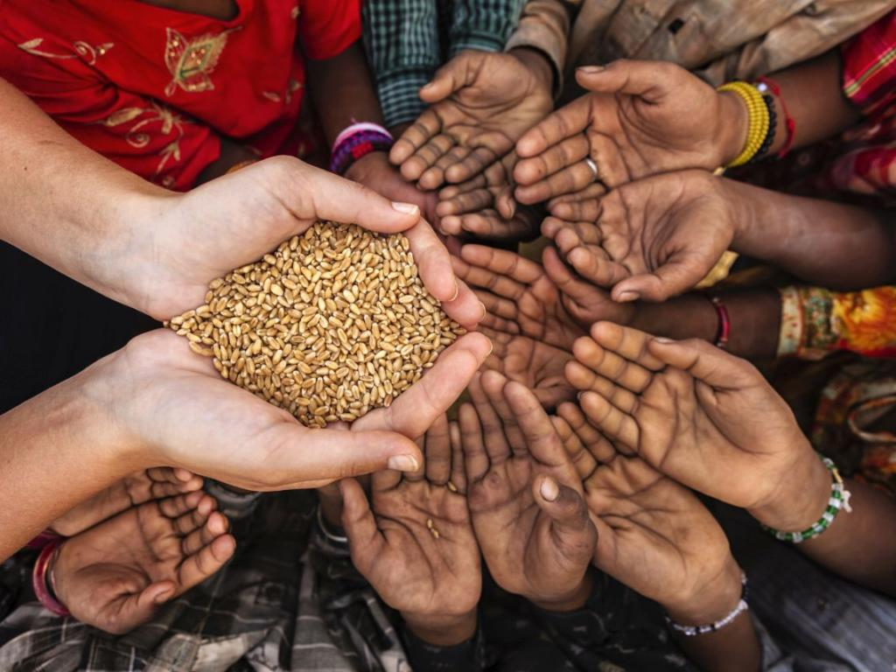
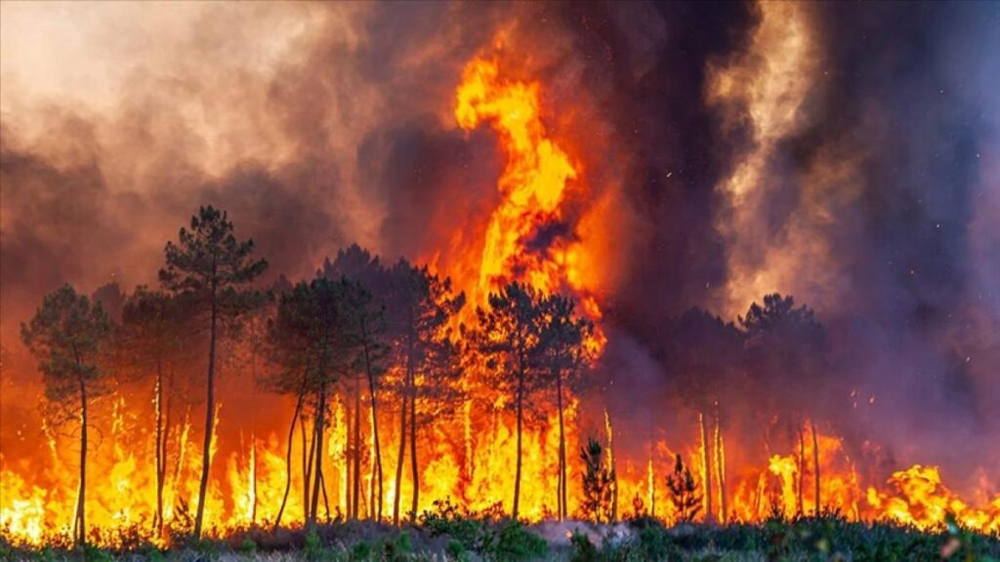

Военни конфликти: Войни и въоръжени конфликти са основни причини за
изселването
на милиони хора. Примери за това са Сирийската гражданска война, конфликтът в Афганистан и
бежанската криза в Украйна.
Преследване по етнически, религиозни, политически или социални причини:
Много
хора напускат своите страни заради репресии, етническо насилие, дискриминация или религиозни
преследвания. Един от най-известните примери е преследването на рохинджи в Мянма.
Климатични промени и природни бедствия: Все повече хора се явяват
климатични
бежанци, бягайки от райони, засегнати от суша, наводнения, урагани или други климатични
катастрофи.
Икономически бедствия и липса на възможности за живот: Безработицата,
бедността
и липсата на перспектива също могат да накарат хората да напуснат страната си.
Глад

Причини за глада
Бедност: Това е основната причина за глада. Милиони хора по света нямат
достатъчно пари, за да си осигурят основни хранителни стоки. Ниските доходи, заедно с високи
разходи за основни нужди като жилище и здравеопазване, правят храната недостъпна за бедните
слоеве на обществото.
Конфликти и войни: Въоръжените конфликти, гражданските войни и насилието
водят
до разруха на инфраструктурата, унищожаване на земеделски култури и блокиране на доставките
на
храни. Хората в конфликтни зони често не могат да достъпят храна и вода, което води до
големи
гладни кризи. Примери включват конфликти в Сирия, Йемен и Южния Судан.
Климатични промени: Промените в климата, като засушавания, наводнения и
екстремни температури, сериозно влияят върху селското стопанство и производството на храни.
Природни бедствия като урагани или суши могат да унищожат реколтата и да намалят наличието
на
храни.
Липса на достъп до храна и пазарни бариери: В някои райони, особено в
развиващите се страни, хората нямат достъп до основни храни поради липса на търговски мрежи,
неефективни логистични системи или високи цени на храните, които не могат да си позволят.
Неефективно земеделие и растящото население: Световното население
продължава да
расте, а в същото време много от земеделските практики остават неефективни и неспособни да
отговорят на нуждите от храна. Земеделските площи са ограничени и не винаги се използват
оптимално.
Неравенство в разпределението на ресурсите: Дори в региони, където има
изобилие
от храна, неравномерното разпределение на ресурсите води до гладуване. Въпреки наличието на
достатъчно храна в световен мащаб, много от нея не стига до нуждаещите се заради
икономически и
политически бариери.
Пожари

Причини за пожари, предизвикани от човека
Лошо управление на природните ресурси: Неправилното боравене с горите и
земеделските земи, като изгаряне на растителност или изпускане на искри от селскостопански
машини,
може да доведе до лесно разпространение на пожарите. Пожарите често започват поради липса на
контрол
върху дейности като разчистване на земя за земеделие или изграждане на нови инфраструктурни
обекти.
Незабелязани или непреднамерени човешки действия: Някои пожари възникват
поради
небрежност, като хвърляне на цигари в сухи райони, неосторожно боравене с огън или излагане
на
искри
от машини или превозни средства. Често тези инциденти водят до мащабни и неконтролируеми
пожари.
Индустриални инциденти: Повреди или човешки грешки в индустриални
съоръжения,
като
заводи за химикали, нефтопреработвателни станции или енергийни комплекси, могат да причинят
сериозни
пожари. Тези пожари обикновено водят до големи екологични щети и опасности за здравето на
хората,
живеещи в близост.
Природни бедствия: Понякога природни явления като земетресения, урагани и
мълнии
могат да създадат условия за възникване на пожари, като например, когато мълния удари в суха
растителност.
Войни
Причини за войните
Политически и териториални конфликти: Много войни започват поради стремежа
за
контрол върху определени територии, природни ресурси или икономически зони. Страните могат
да
водят
война, за да защитят своите граници или да анексират чужди територии.
Религиозни и етнически конфликти: Войни често възникват заради различия в
религиозните убеждения или етническата принадлежност. Примери за това са граждански войни и
конфликти в Близкия изток, Югославия през 90-те години и конфликтите в Африка.
Икономически интереси: В някои случаи войните са мотивирани от икономически
интереси, като например желанието да се получат достъп до ресурси като нефт, злато, вода или
други
стратегически важни материали.
Исторически антагонизми и териториални претенции: В много случаи
враждебните
отношения, съществували дълго време между различни народи или нации, водят до въоръжени
конфликти.
Териториални спорове, както и историческа реваншизъм, могат да бъдат основни причини за
избухването
на войни.
Политически идеологии: В миналото, много войни са започвали на базата на
разликите
в политическите системи и идеологии. Пример за това са Студената война и последвалите
конфликти
като
войната във Виетнам, където различията между капитализъм и комунизъм са довели до насилие.
Международна намеса и геополитика: Въпреки че много войни започват в
рамките на
дадена страна или регион, те често се разпространяват поради намесата на други държави,
които
имат
геополитически интереси. Това е особено характерно за конфликтите по време на Студената
война.